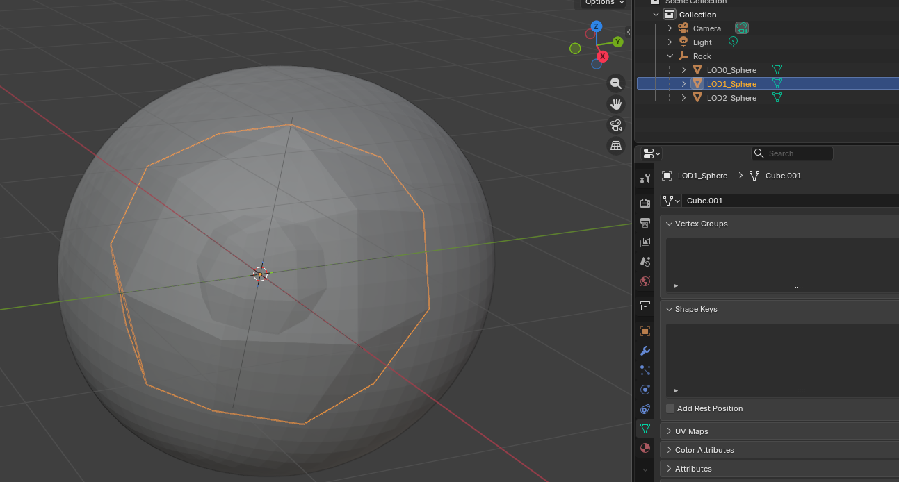
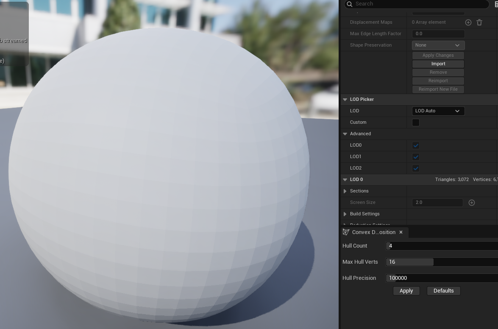
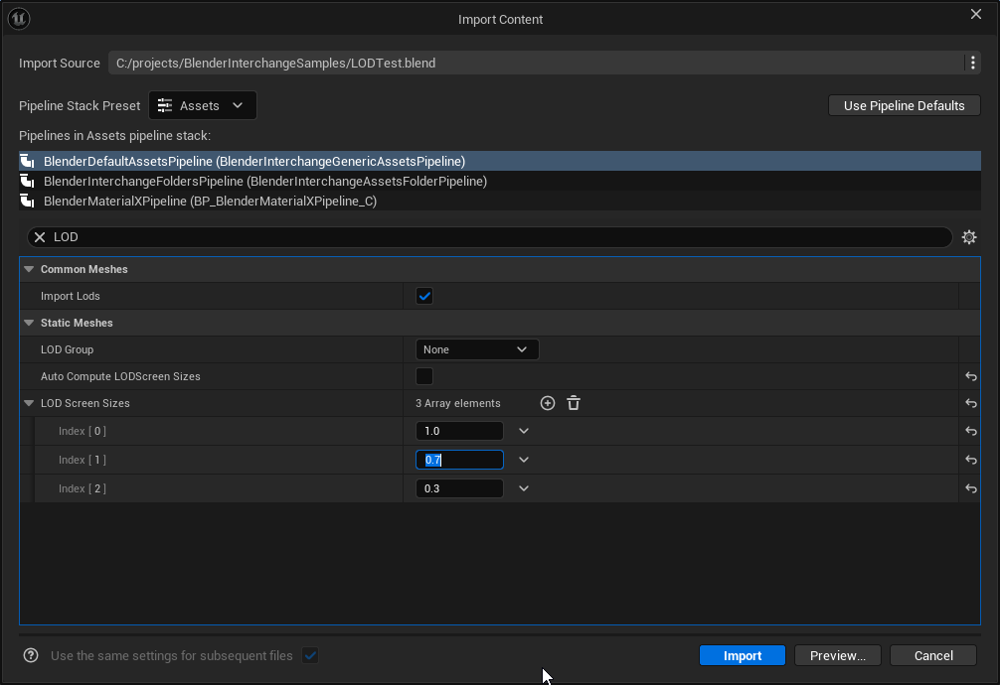
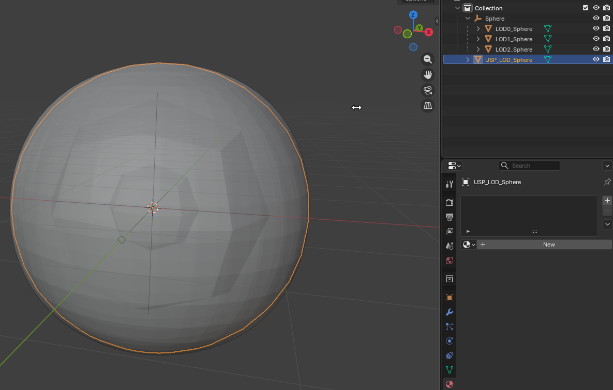

Importing LODs
LOD Overview
LOD stand for level of detail and are a system used to swap out meshes for less detailed meshes to get better memory and rendering performance. Swapping between different LODs usually happens based on screen size relative to the player's view, but can also be used to switch to reduce polygon counts for lower performance platforms.
You should reference unreal's own guides for LOD generation which I will link at the end of this page.
Relationship to Nanite
Nanite is a replacement for LODs. If you are using Nanite you will generally not need LODs. The reason Nanite does not use LODs is it is already able to swap out parts of the mesh dynamically at runtime.
The main exception to not need LODs this is if your game is planning on launching on multiple platforms - some of which do not support nanite. If you would like to set up LODs for your meshes you can look at unreal's nanite guide under the "Using Custom Fallback Mesh LODs for Nanite-enabled Meshes"
It also worth noting that LODs can be used for complex collision regardless of whether you are using nanite or not.
Import workflow
LODs are relatively simple to import with Blender Interchange. Simply gather all of your LODs under a single empty in Blender. The name you give the empty does not matter since it will not be used. Under the empty you can add all of your LODs starting from 0 - which is the full resolution mesh.
Each mesh must follow this format: LOD#_MeshName.
The example below has LOD0_Sphere, LOD1_Sphere, and LOD3_Sphere in the example. The mesh in unreal will be called sphere and it will have 3 LODs. Note that in this example I intentionall made there spheres shrink so we can see the difference more easily. Generally you would want LODs to approximate the original mesh using a decimate modifier or something similar.

After importing into unreal through the blender interchange plugin you should see a single mesh imported with 3 LODs. You can switch between which LOD is displayed the in the static mesh editor using the dropdown in the top right of the screen or in the details panel. If you have LOD Auto it will preview the swap between LODs based on screen size which can be helpful
Note that if you have nanite enabled you will not be able to see the LOD displayed. You should disable nanite at least temporarily to see your LODs. You can disable nanite in the details panel or you can disable nanite in the import dialog when importing your mesh by toggling off "Build Nanite". Remember to hit Apply Changes or it won't take effect.
Below you can see the largest sphere that I set as LOD0. You can see that 3 LODs where imported.

Moving the camera away on LOD Auto will swap to my lower resolution LOD - in this case a comically different LOD to show the difference.

Automating LOD Setup
An alternative to making LODs in blender is having unreal do it automatically. These can get good results depending on your settings but will also give you less control. Please refer to this guide as a starting point if you want Unreal to generate LODs for you.
Static Mesh Automatic LOD Generation in Unreal Engine
If you would like manual control with this plugin on import you can set LOD related settings on import. In the image below I've manually set the screen size needed for each LOD. If you find settings you like for a particular type of asset you can save them as a preset pipeline for future imports.

LODs and Collision Import
You may have already read this in our collision guide, but you can import simple collision through Blender Interchange import. To do so simply add collision to your scene as detailed on the page, but include LOD0 with the name.
In this example we would add a mesh named USP_LOD0_Sphere to add a sphere collider as simple collision. Refer to our collision guide for more information on how to add custom colliders to your simple collision on import.
Unreal does not store simple collision per LOD and will only care about LOD0. If you add collision for LOD1 it will simply be ignored. Note that you can use a specific LOD for your complex collision if you are using complex collision.

Unreal Engine References
- Creating and Using LODs in Unreal Engine | Unreal Engine 5.7 Documentation
- [Setting Up Per-Platform LODs](https://dev.epicgames.com/documentation/en-us/unreal-engine/setting-up-per-platform-lods
- Optimizing LOD Screen Size Per-Platform in Unreal Engine